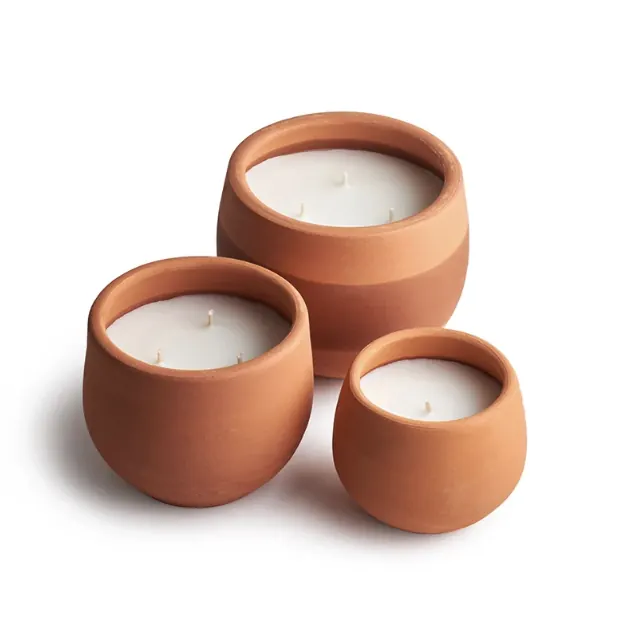
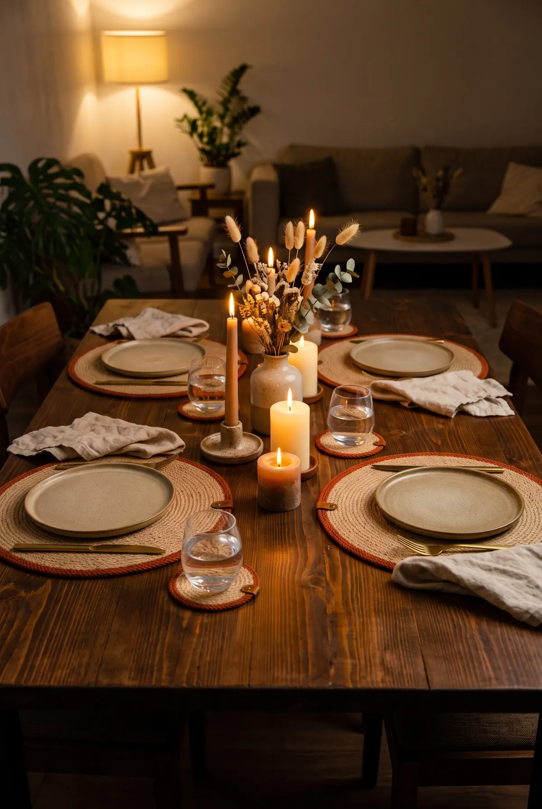
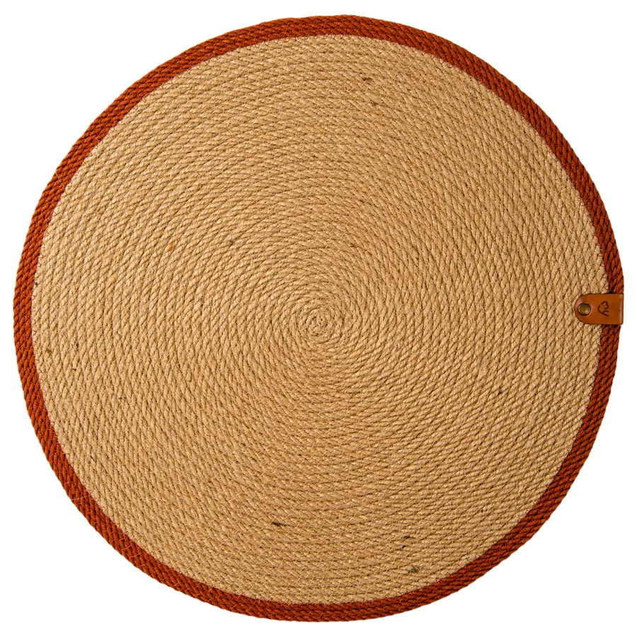
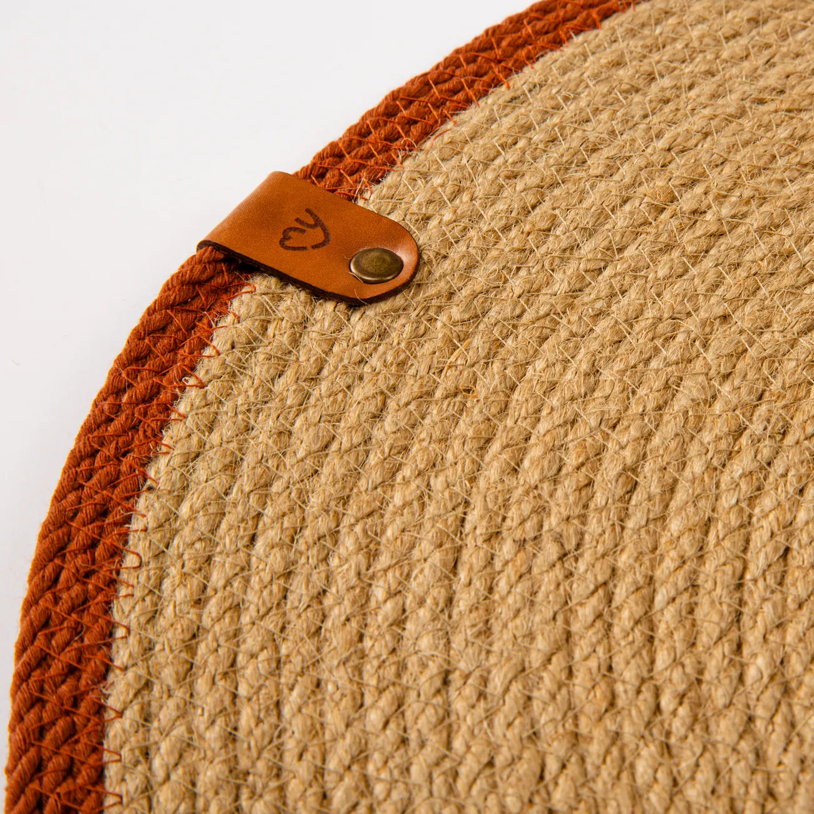
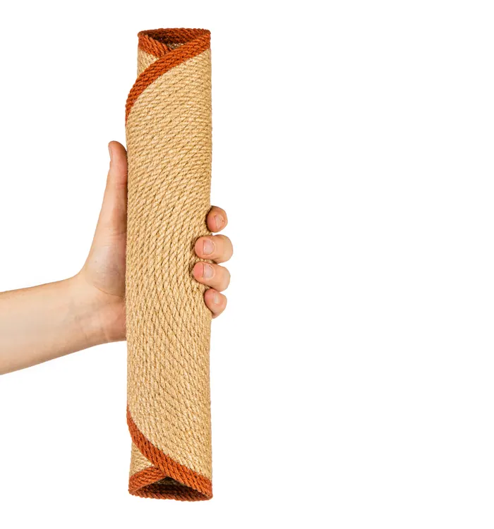
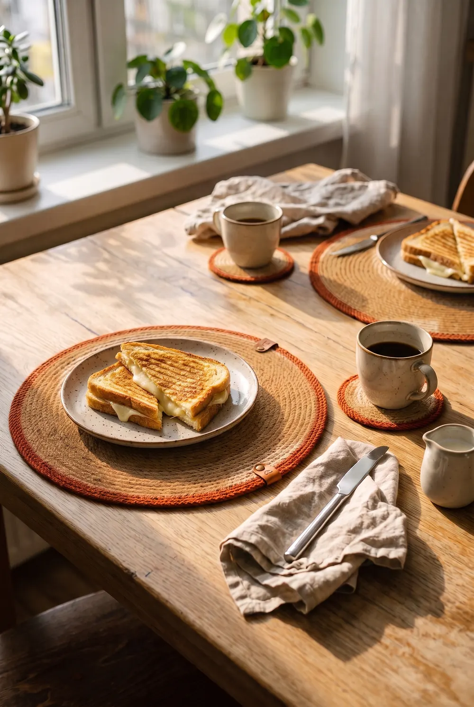
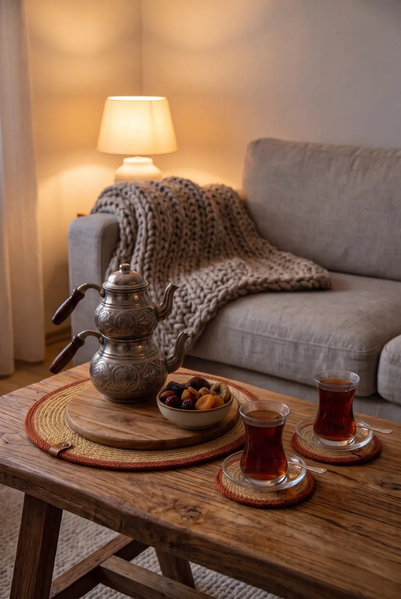
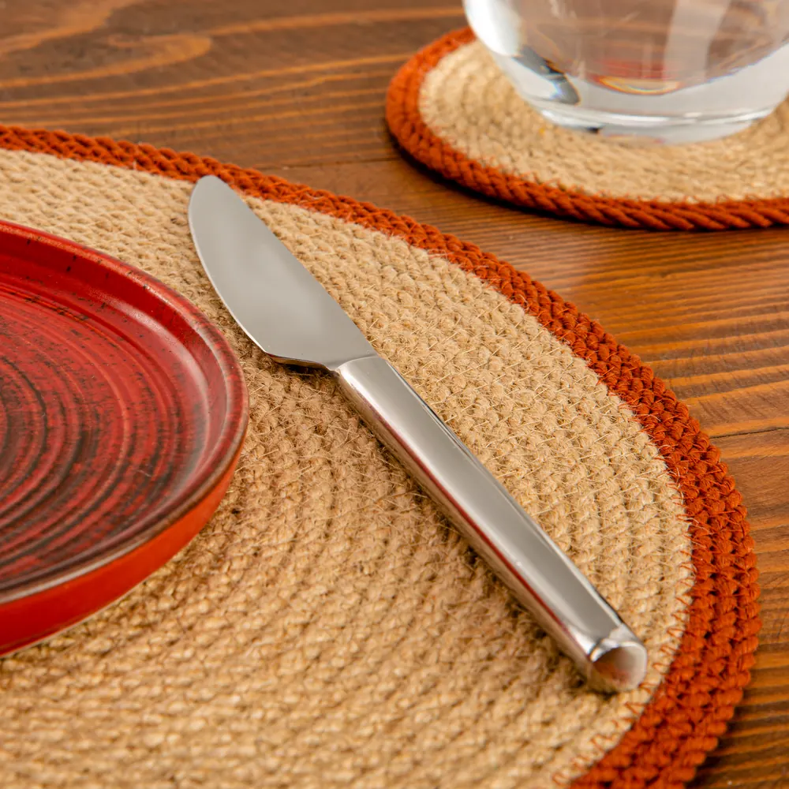
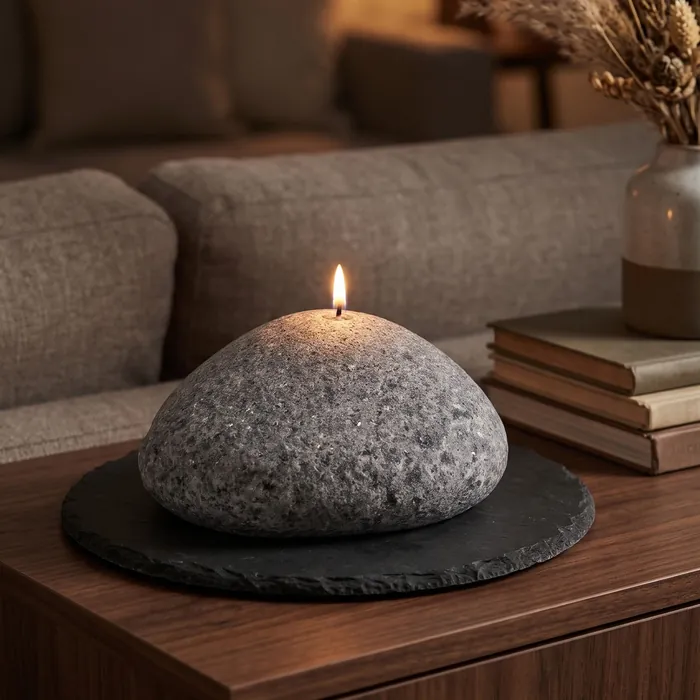

Toprak çömlekte kokulu mum
Kokuyu ve boyu seçin; Trendyol'da açılır.
Doğal jüt · Elle örülür
Yuvarlak amerikan servisler ve aynı renkte bardak altlıkları. Dört kenar rengi; iki, dört ve altı kişilik setler.
Sınırlı sayıda · İngiltere'deki mağazamız için 2023'te üretildi


Dört renk
Tarçın
Kiremit tonunda halat kenar. Ahşap masada ve toprak tonlu tabaklarla sıcak durur.
Set boyunu seçin; Trendyol'daki ürün sayfası açılır.
Set boyları
Her sette servis kadar bardak altlığı var. Bütün setler dört renkte.
2 servis + 2 bardak altlığı · 4 parça
Tarçın, Hardal, Gold, Doğal
4 servis + 4 bardak altlığı · 8 parça
Tarçın, Hardal, Gold, Doğal
6 servis + 6 bardak altlığı · 12 parça
Tarçın, Hardal, Gold, Doğal

Yakından
Her servis doğal jüt halattan elle örülür; halat ortadan dışa doğru sarmal ilerler. Kenardaki renkli halat setin rengini verir, deri etikette “my” simgemiz damgalıdır. El yapımı olduğu için parçalar arasında küçük ölçü ve örgü farkları olabilir.

Kullanmadığınızda rulo yapıp çekmeceye kaldırın.
Sofrada

Peynirli tost, demli çay, pencere önünde iki kişilik bir masa.

Sıcak demliği ve çaydanlığı jütün üzerine doğrudan koymayın; altına bir nihale yeter.

Her sette servisle aynı renkte bardak altlıkları var.
Mumlar
Toprak çömlek içinde dört kokuda mum; küçük, orta ve büyük boy ya da üçü bir arada. Yanında sofraya taş dokusu getiren kokusuz çakıl taşı mumlar.

Kokuyu ve boyu seçin; Trendyol'da açılır.

Kokusuz · Ø16 × 7 cm · yaklaşık 30 saat
Yanan mumu gözetimsiz bırakmayın; mumluk ya da tabak üzerinde kullanın.
Hikâyemiz
2023'te İngiltere'deki ev dekorasyonu mağazamız için el yapımı jüt servisler ve mumlar ürettirdik. Bu koleksiyonu şimdi Türkiye'deki sofralar için Trendyol mağazamızda satışa sunuyoruz. Stok sınırlı.
Sıkça sorulanlar
Bütün ürünlerimiz Trendyol mağazamızda. Bu sayfadaki düğmeler sizi doğrudan ilgili ürünün Trendyol sayfasına götürür; ödeme, kargo ve iade Trendyol üzerinden, Trendyol'un koşullarıyla yapılır.
Her sette servis kadar bardak altlığı var. Örneğin 4'lü sette 4 yuvarlak jüt amerikan servis ve aynı renkte 4 bardak altlığı, toplam 8 parça.
Tarçın ve Gold servisler yaklaşık 36×34 cm, Hardal ve Doğal yaklaşık 35 cm; bardak altlıkları yaklaşık 9×9 cm. El yapımı olduğu için küçük farklar olabilir.
Doğrudan konmamalı. Sıcak demlik, çaydanlık ve tencerenin altına nihale koyun; yanan mumu da mumluk ya da tabak üzerinde kullanın.
Kullanmadığınızda rulo yapıp kuru bir çekmecede saklayabilirsiniz.
İletişim
Ürünler, toplu sipariş ya da iş birliği için formu doldurun; e-postayla dönüş yapalım. Sipariş, kargo ve iade sorularınızı Trendyol'daki sipariş sayfanızdan da iletebilirsiniz.
E-posta: mychakrahome@gmail.com